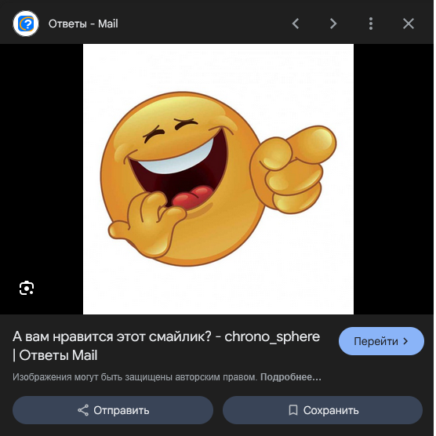
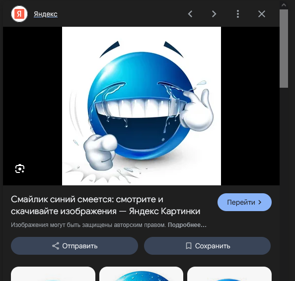
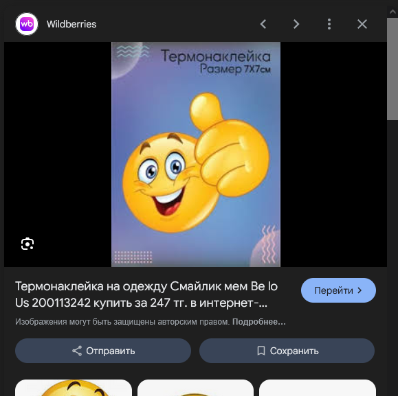
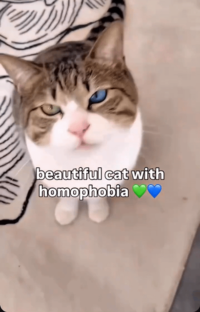
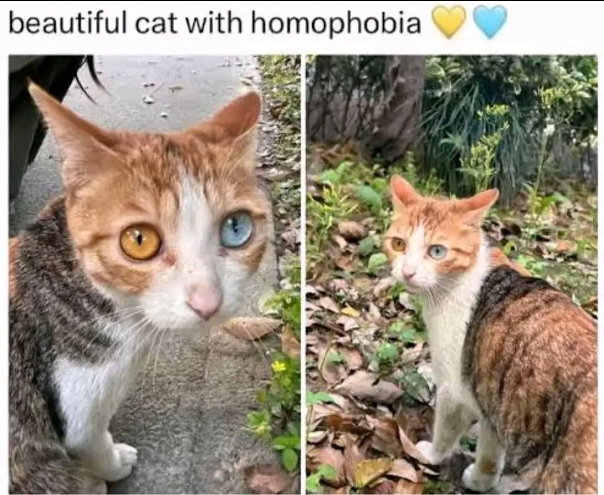

Шутка 1
- Почему программисты не любят природу?
- Там слишком много багов!

!!!! НАКОНЕЦ ТО ВТОРАЯ ЧАСТЬ ЛЕГЕНДАРНОЙ ФРАНШИЗЫ !!!!
- Почему программисты не любят природу?
- Там слишком много багов!

Заходит тестировщик в бар. Забегает в бар. Пролезает в бар. Танцуя, проникает в бар. Заказывает пиво, 2 пива, 0 пива, 999999999 пив, ящерицу в стакане. Первый реальный посетитель заходит в бар и спрашивает, где туалет. Бар сгорает.

Сын спрашивает отца-программиста:
- Пап, а почему солнце встает на востоке и садится на западе?
- Работает? Ничего не трогай!


Описание: Я произвел просмотр видео в молодёжной социальной сети ТикТок про чудесного кота с гомофобией, где продемонстрирован питомец с этой особенностью
Мой отзыв:
Я был очень рад увидеть животное столь красивое и умное
Приведу цитаты единомышленников, оставивших свои комментарии в молодёжной социальной сети ТикТок к данному видеоролику

| Тур | Дата и время | Матч | Счет |
|---|---|---|---|
| Тур 14 | 02.11.2025, 17:00 | Балтика — Ахмат | 2:0 |
| Тур 15 | 09.11.2025, 19:45 | Балтика — Краснодар | 1:1 |
| Тур 16 | 22.11.2025, 14:00 | Оренбург — Балтика | 0:0 |
| Тур 17 | 29.11.2025, 19:30 | Балтика — Спартак-Москва | 1:0 |
| Тур 18 | 07.12.2025, 19:00 | Балтика — Крылья Советов | 2:0 |